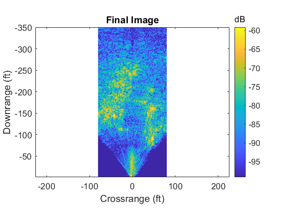

clear all;
load sif;
N = size(sif,2);
for ii = 1:N
H(ii) = 0.5 + 0.5*cos(2*pi*(ii-N/2)/N);
end
for ii = 1:size(sif,1)
sif_h(ii,:) = sif(ii,:).*H;
end
sif = sif_h;
figcount = 1;
close_as_you_go = 0;
do_all_plots = 0;
set(0,'defaultaxesfontsize',13);
if do_all_plots == 1,
figure(figcount);
S_image = angle(sif);
imagesc(Kr, Xa, S_image);
colormap(gray);
title('Phase Before Along Track FFT');
xlabel('K_r (rad/m)');
ylabel('Synthetic Aperture Position, Xa (m)');
cbar = colorbar;
set(get(cbar, 'Title'), 'String', 'radians','fontsize',13);
print(gcf, '-djpeg100', 'phase_before_along_track_fft.jpg');
if close_as_you_go == 1,
close(figcount);
end
figcount = figcount + 1;
end
zpad = 2048;
szeros = zeros(zpad, size(sif,2));
for ii = 1:size(sif,2)
index = round((zpad - size(sif,1))/2);
szeros(index+1:(index + size(sif,1)),ii) = sif(:,ii);
end
sif = szeros;
clear ii index szeros;
S = fftshift(fft(sif, [], 1), 1);
clear sif;
Kx = linspace((-pi/delta_x), (pi/delta_x), (size(S,1)));
if do_all_plots == 1,
figure(figcount);
S_image = dbv(S);
imagesc(Kr, Kx, S_image, [max(max(S_image))-40, max(max(S_image))]);
colormap(gray);
title('Magnitude After Along Track FFT');
xlabel('K_r (rad/m)');
ylabel('K_x (rad/m)');
cbar = colorbar;
set(get(cbar, 'Title'), 'String', 'dB','fontsize',13);
print(gcf, '-djpeg100', 'mag_after_along_track_fft.jpg');
if close_as_you_go == 1,
close(figcount);
end
figcount = figcount + 1;
end
if do_all_plots == 1,
figure(figcount);
S_image = angle(S);
imagesc(Kr, Kx, S_image);
colormap(gray);
title('Phase After Along Track FFT');
xlabel('K_r (rad/m)');
ylabel('K_x (rad/m)');
cbar = colorbar;
set(get(cbar, 'Title'), 'String', 'radians','fontsize',13);
print(gcf, '-djpeg100', 'phase_after_along_track_fft.jpg');
if close_as_you_go == 1,
close(figcount);
end
figcount = figcount + 1;
end
if do_all_plots == 1,
figure(figcount);
S_image = dbv(fftshift(fft(S, [], 2), 2));
imagesc(linspace(-0.5, 0.5, size(S, 2)), Kx, S_image, [max(max(S_image))-40, max(max(S_image))]);
colormap(gray);
title('Magnitude of 2-D FFT of Input Data');
xlabel('R_{relative} (dimensionless)');
ylabel('K_x (rad/m)');
cbar = colorbar;
set(get(cbar, 'Title'), 'String', 'dB','fontsize',13);
print(gcf, '-djpeg100', 'mag_after_2D_fft.jpg');
if close_as_you_go == 1,
close(figcount);
end
figcount = figcount + 1;
end
for ii = 1:size(S,2)
for jj = 1:size(S,1)
phi_mf(jj,ii) = Rs*sqrt((Kr(ii))^2 - (Kx(jj))^2);
Krr(jj,ii) = Kr(ii);
Kxx(jj,ii) = Kx(jj);
end
end
smf = exp(j*phi_mf);
S_mf = S.*smf;
clear smf phi_mf;
if do_all_plots == 1,
figure(figcount);
S_image = angle(S);
imagesc(Kr, Kx, S_image);
colormap(gray);
title('Phase After Matched Filter');
xlabel('K_r (rad/m)');
ylabel('K_x (rad/m)');
cbar = colorbar;
set(get(cbar, 'Title'), 'String', 'radians','fontsize',13);
print(gcf, '-djpeg100', 'phase_after_matched_filter.jpg');
if close_as_you_go == 1,
close(figcount);
end
figcount = figcount + 1;
end
clear S;
if do_all_plots == 1,
figure(figcount);
S_image = dbv(fftshift(fft(S_mf, [], 2), 2));
imagesc(linspace(-0.5, 0.5, size(S_mf, 2)), Kx, S_image, [max(max(S_image))-40, max(max(S_image))]);
colormap(gray);
title('Magnitude of 2-D FFT of Matched Filtered Data');
xlabel('R_{relative} (dimensionless)');
ylabel('K_x (rad/m)');
cbar = colorbar;
set(get(cbar, 'Title'), 'String', 'dB','fontsize',13);
print(gcf, '-djpeg100', 'mag_after_downrange_fft_of_matched_filtered_data.jpg');
if close_as_you_go == 1,
close(figcount);
end
figcount = figcount + 1;
end
kstart =73;
kstop = 108.5;
Ky_even = linspace(kstart, kstop, 1024);
clear Ky S_St;
count = 0;
for ii = 1:zpad;
count = count + 1;
Ky(count,:) = sqrt(Kr.^2 - Kx(ii)^2);
S_st(count,:) = (interp1(Ky(count,:), S_mf(ii,:), Ky_even));
end
S_st(find(isnan(S_st))) = 1E-30;
clear S_mf ii Ky;
if do_all_plots == 1,
figure(figcount);
S_image = angle(S_st);
imagesc(Ky_even, Kx, S_image);
colormap(gray);
title('Phase After Stolt Interpolation');
xlabel('K_y (rad/m)');
ylabel('K_x (rad/m)');
cbar = colorbar;
set(get(cbar, 'Title'), 'String', 'radians','fontsize',13);
print(gcf, '-djpeg100', 'phase_after_stolt_interpolation.jpg');
if close_as_you_go == 1,
close(figcount);
end
figcount = figcount + 1;
end
N = size(Ky_even,2);
for ii = 1:N
H(ii) = 0.5 + 0.5*cos(2*pi*(ii-N/2)/N);
end
for ii = 1:size(S_st,1)
S_sth(ii,:) = S_st(ii,:).*H;
end
clear v Kr Krr Kxx Ky_even;
v = ifft2(S_st,(size(S_st,1)*4),(size(S_st,2)*4));
bw = 3E8*(kstop-kstart)/(4*pi);
max_range = (3E8*size(S_st,2)/(2*bw))*1/.3048;
figure(figcount);
S_image = v;
S_image = fliplr(rot90(S_image));
cr1 = -80;
cr2 = 80;
dr1 = 1 + Rs/.3048;
dr2 = 350 + Rs/.3048;
dr_index1 = round((dr1/max_range)*size(S_image,1));
dr_index2 = round((dr2/max_range)*size(S_image,1));
cr_index1 = round(( (cr1+zpad*delta_x/(2*.3048)) /(zpad*delta_x/.3048))*size(S_image,2));
cr_index2 = round(( (cr2+zpad*delta_x/(2*.3048))/(zpad*delta_x/.3048))*size(S_image,2));
trunc_image = S_image(dr_index1:dr_index2,cr_index1:cr_index2);
downrange = linspace(-1*dr1,-1*dr2, size(trunc_image,1)) + Rs/.3048;
crossrange = linspace(cr1, cr2, size(trunc_image, 2));
clear ii;
for ii = 1:size(trunc_image,2)
trunc_image(:,ii) = (trunc_image(:,ii)').*(abs(downrange*.3048)).^(3/2);
end
trunc_image = dbv(trunc_image);
imagesc(crossrange, downrange, trunc_image, [max(max(trunc_image))-40, max(max(trunc_image))-0]);
colormap('default');
title('Final Image');
ylabel('Downrange (ft)');
xlabel('Crossrange (ft)');
axis equal;
cbar = colorbar;
set(get(cbar, 'Title'), 'String', 'dB','fontsize',13);
print(gcf, '-djpeg100', 'final_image.jpg');
if close_as_you_go == 1,
close(figcount);
end
figcount = figcount + 1;
